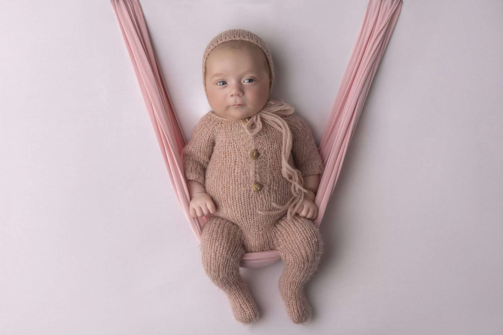

Owings Mills Families
Owings Mills families drive in for studio newborn, maternity, and family sessions. The drive from Owings Mills Town Center is under fifteen minutes, straight down Reisterstown Road or I-795.
Local to Owings Mills
A lot of Owings Mills bookings stack in the fall. Cake smash and family sessions back-to-back, right when holiday card season kicks in. October and November fill up the fastest. If you're aiming for a December card, book by mid-September.
The studio's easy to reach from Owings Mills and Garrison. I-795 drops you right onto Reisterstown Road, and Sweet Meadow is a quiet residential turn off of that. Parking is out front.

Directions
The studio is at 2376 Sweet Meadow Road, Baltimore MD 21209. It's ten to fifteen minutes from Owings Mills.
South on I-795 or Reisterstown Road, then east on Smith Avenue. The studio is on Sweet Meadow Road, a residential side street. Parking right out front.
Nearby landmarks: Owings Mills Town Center, Garrison Forest School, Quarry Lake.

What you can book
Owings Mills clients book everything I offer. Newborn for the first two weeks. Sitter around six months. Cake smash at one. Maternity in the third trimester. Family sessions whenever. Headshots when someone needs an updated bio photo.
Same studio every time. Same photographer. I do my own retouching, so the look stays consistent whether you're booking your first session or your fifth.
More sessions
Ready?
Send me your due date or preferred session type. I'll reply within one business day.